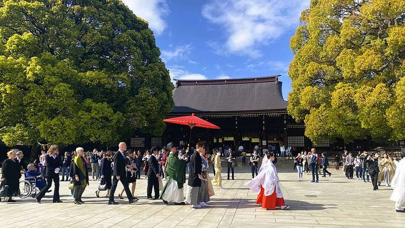
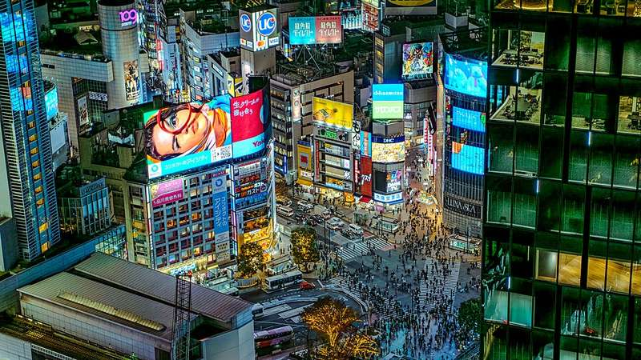
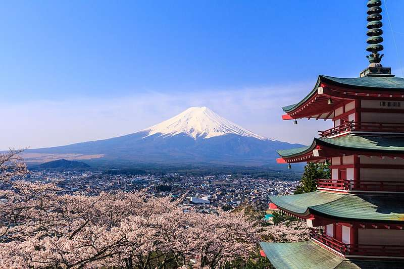
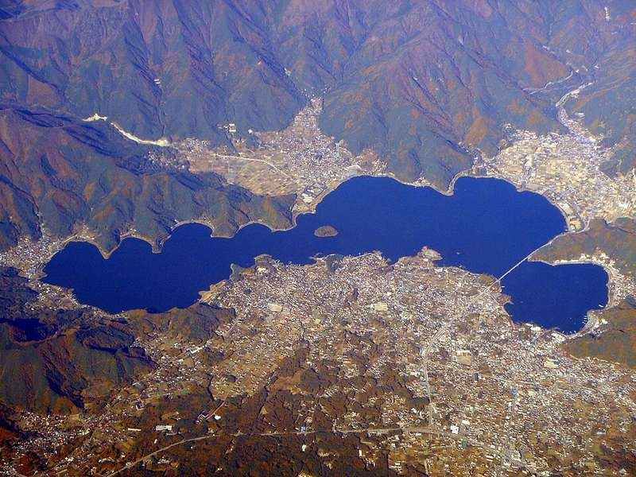
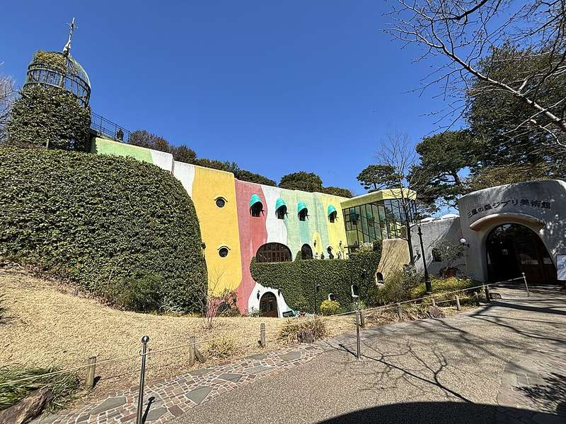
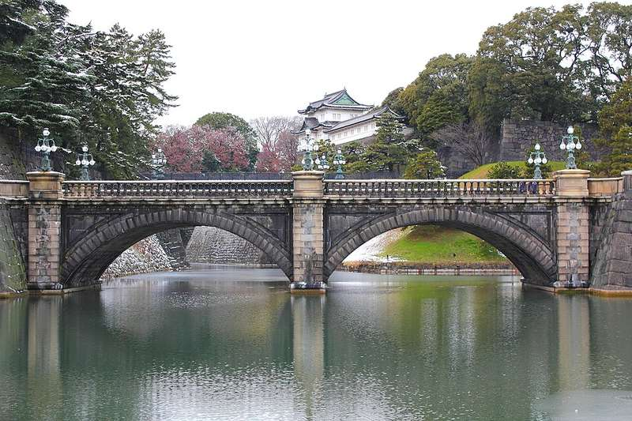
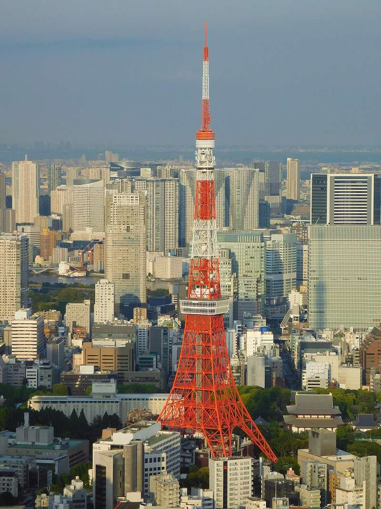
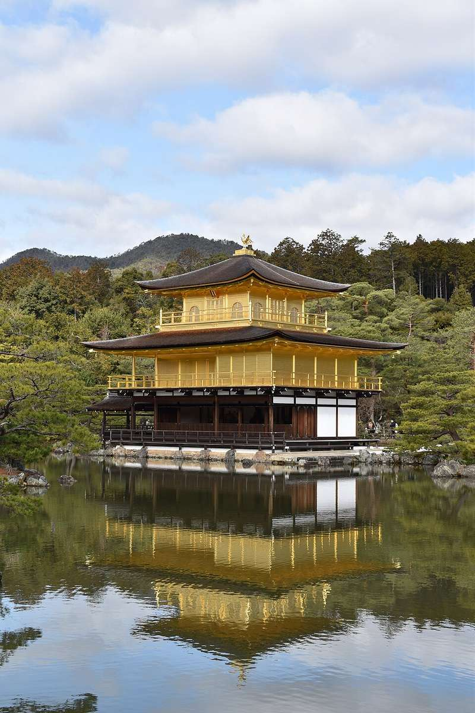
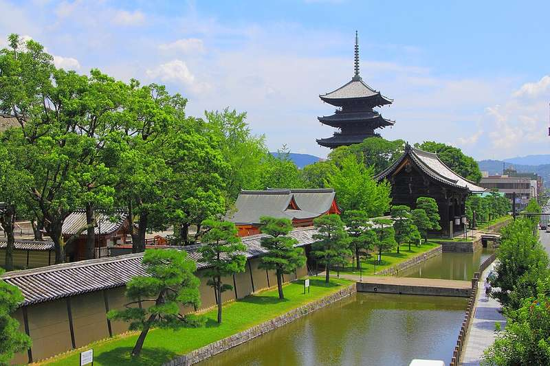

🗼Tokio09.–16.08. · 9 Tage/Gruppen · 45 Spots (davon 8 🍽)▸
T1 · „Vor der Haustür“ — Shinjuku5 Spots▸
Mo 10.08. (jetlag-schonend). Alles fußläufig/1 Bahn vom Hotel. Gyoen liegt jetzt auf T2 (montags zu) — dafür startet ihr entspannt im Yoyogi Park.
🗺 Diese Gegend in Google Maps — Route & Zoom1🌳 Yoyogi ParkGroßer Stadtpark — der ruhige Start

Weite Wiesen und viel Schatten, nur eine kurze Bahnfahrt südlich von Shinjuku. Perfekt für den jetlag-schonenden Auftakt: Konbini-Kaffee holen, ankommen, treiben lassen. Morgens angenehm leer und im August die kühlste Stunde des Tages.
⏰ immer offen · gratis · 🚇 ~1 Station / kurzer Weg ab Shinjuku
2🌆 Tokyo Metropolitan Government BuildingGratis-Aussichtsdeck in 202 m Höhe

Doppelturm der Stadtregierung mit kostenlosem Observatorium im 45. Stock — bei klarem Wetter bis zum Fuji. Abends schöner Stadtlichter-Blick, und ihr spart euch für den Anfang ein bezahltes Deck.
⏰ 9:30–22:00 · gratis · ⚠ Nordturm am 2./4. Montag zu → am 10.08. den Südturm nehmen · ~10 Min zu Fuß
3⛩ Hanazono-SchreinRoter Inari-Schrein zwischen Hochhäusern

Kleiner, jahrhundertealter Schrein, der mitten im Vergnügungsviertel überlebt hat — rote Tore, Laternen, oft Flohmarkt am Sonntag. 5-Minuten-Stopp, aber ein schöner Kontrast zu Kabukicho nebenan.
⏰ rund um die Uhr · gratis
4🏘 KoenjiVintage- & Indie-Viertel

Tokios Alternativ-Ecke: Secondhand-Läden, Plattenläden, kleine Kneipen unter den Bahnbögen und die überdachte PAL-Einkaufsstraße. Nachmittags hinfahren, treiben lassen — hier ist kaum Tourismus.
🚇 Chuo-Linie ab Shinjuku ~8 Min · Läden öffnen meist erst ab ~12 Uhr
5🍸 Golden Gai~200 Mini-Bars in sechs Gassen

Legendäres Bar-Viertel aus der Nachkriegszeit: winzige Kneipen mit 5–8 Plätzen, jede mit eigenem Thema (Jazz, Punk, Film …). Viele sind ausdrücklich touristenfreundlich (Schilder an der Tür), manche nur für Stammgäste — einfach weiterziehen. Cover-Charge von ¥500–1.000 (~€3–6) ist normal und steht meist außen dran.
⏰ ab ~21 Uhr lebendig · direkt neben Kabukicho · Bargeld mitnehmen
T2 · „Kawaii & Crossing“ — Meiji / Harajuku / Shibuya4 Spots · 2 🍽 · 🎌 Feiertag▸
Di 11.08. Route von Nord nach Süd, alles an der Yamanote-Achse. 🎌 „Bergtag“ = nationaler Feiertag — alles offen, aber überall voller. Shibuya Sky ist NICHT mehr an diesem Tag (Slot war weg) — liegt jetzt auf T3, 12.08. abends.
🗺 Diese Gegend in Google Maps — Route & Zoom1⛩ Meiji-SchreinWaldschrein — früh hin, dann habt ihr ihn fast allein

Tokios wichtigster Schrein liegt in einem 100.000-Bäume-Wald mitten in der Stadt — beim Reingehen wird es spürbar kühler und leiser. Am Weg stehen die berühmten Sake- und Weinfass-Wände. Früh morgens (vor 9) ist es magisch leer.
⏰ Sonnenauf- bis -untergang (~5–18 Uhr) · gratis
2🌳 Shinjuku GyoenRiesiger Landschaftsgarten — von T1 hierher gezogen

Drei Gartenwelten in einer: japanischer Teichgarten, englische Wiesen, französische Alleen — dazu viel Schatten und ein Gewächshaus. Liegt nur ~2 Bahnstationen vom Meiji-Schrein, morgens angenehm leer und im August die kühlste Stunde des Tages.
⏰ 9:00–17:30 · ¥500 (~€3) · dienstags offen · 🚇 ~2 Stationen Harajuku↔Shinjuku-gyoemmae
3🛍 Harajuku — Takeshita Street & OmotesandoKawaii-Chaos + elegante Flaniermeile
Die Takeshita Street ist Japans Teenie-Moden-Wahnsinn auf 400 Metern: Crêpes, bunte Läden, Gedränge. Parallel dazu die Omotesando — baumbestandene Allee mit Architektur-Flagshipstores. Beides zusammen ~1–2 Stunden.
🚇 direkt am JR-Bahnhof Harajuku · Crêpe als Zwischensnack einplanen 😄
4🚦 Shibuya CrossingDie berühmteste Kreuzung der Welt

Bis zu 3.000 Menschen pro Grünphase, von allen Seiten gleichzeitig. Einmal mittendurch, dann von oben schauen: Mag's Park (Dachterrasse Magnet by Shibuya109) oder aus dem Shibuya-Sky-Fenster später.
⏰ am eindrucksvollsten ab Dämmerung · gratis · Hachiko-Statue direkt daneben
🍽 Essen in der Gegend
5Ikura Shibuya — Teppan-OmuriceLunch: Omelett-Reis live am Counter 🍳
Teppan-Omurice mit Hamburg-Steak, direkt vor euch zubereitet — die Sauce wählt ihr (Demiglace, Chili, Mentaiko-Creme oder Black Curry), Käse-Topping wird empfohlen. Hamburg-Omurice ¥2.000 (~€12).
⏰ NUR 11–15 & 17–22 Uhr → als Lunch einbauen · MIEUX Bldg 1F, Maruyamacho
6Menya Musashi Bukotsu GaidenJulians Tipp: Ramen mit Show-Faktor 🍜
„Fast eine Sehenswürdigkeit“ (O-Ton Julian): die Küche brüllt jede Bestellung im Chor zurück. Bekannt für Tsukemen — dicke Nudeln zum Dippen in konzentrierter Brühe. An der Dogenzaka, 5 Min von der Crossing.
⏰ ~11–22 Uhr · ~¥1.000–1.500 (~€6–9) · Ticket-Automat am Eingang, Bargeld mitnehmen
T3 · „Tempel & Neon“ — Asakusa / Ueno / Akihabara5 Spots · 1 🍽▸
Mi 12.08. Früh in Asakusa starten (Hitze + Massen), Museums-Mittagspause, Akihabara am Nachmittag. ✅ Shibuya Sky ist für 19:00 Uhr gebucht — Akihabara spätestens ~17:45 verlassen, sonst wird der Sprung quer durch die Stadt knapp.
🗺 Diese Gegend in Google Maps — Route & Zoom1🛕 Senso-jiTokios ältester Tempel (seit 628)

Durch das Kaminarimon-Tor mit der Riesenlaterne, die Nakamise-Einkaufsgasse hoch (Snacks: Ningyo-yaki, Senbei) zur großen Halle mit fünfstöckiger Pagode. Um 7–8 Uhr morgens habt ihr Ruhe UND die kühlste Luft des Tages. Julian: „gleich am ersten Tag, top“.
⏰ Gelände 24 h, Halle 6–17 Uhr · gratis
2🗼 Tokyo Skytree634-m-Turm — Aussicht oder Foto von unten

Höchster Turm Japans, 15 Min zu Fuß über den Fluss von Asakusa (schöner Blick vom Sumida-Ufer). Julian warnt: wer hoch will, muss FRÜH buchen — sie selbst haben keinen Slot mehr bekommen. Wenn ihr Shibuya Sky gebucht habt, reicht der Skytree sonst auch von außen.
⏰ 10–21 Uhr · Tembo Deck ¥2.100–3.100 (~€13–19) · unten Solamachi-Mall (Klima!)
3🎨 Ueno Park + MuseumKlimatisierte Mittagspause zwischen Museen

Großer Park mit Tokios Museums-Cluster. Plan für die Mittagshitze: Tokyo National Museum (Samurai-Schwerter, Kimonos — Japans bestes Museum) 2–3 h in der Klimaanlage. Am Südrand die Ameyoko-Marktgasse.
⏰ Nationalmuseum 9:30–17 Uhr, Mo zu (Mi passt) · ¥1.000 (~€6)
4🎮 AkihabaraElectric Town — Nachmittag im Neonlicht

Anime, Manga, Retro-Games und Elektronik auf mehreren Etagen: Super Potato (Retro-Games), Yodobashi Akiba (alles mit Stecker), Gachapon-Hallen. ⚠ Nicht bis spätabends bleiben — spätestens ~17:45 los, danach geht's quer nach Shibuya zum Sky-Slot.
⏰ Läden meist 10–21 Uhr · 🚇 ab Ueno 2 Stationen · spätestens ~17:45 Richtung Shibuya los
5🌆 Shibuya Sky ⭐✅ Gebucht: 19:00 Uhr — Nacht-Skyline statt Sunset

Offenes Deck über ganz Tokio — Glaskanten, Liegenetze, 360°-Blick. Der Slot für den 11.08. war schon weg, deshalb ist's jetzt auf 12.08./19:00 gebucht — kein Sunset mehr (der ist ~18:40 vorbei), dafür Skyline bei Nacht. ⚠ Kommt von Akihabara (Ost) — ~30 Min Bahn quer durch die Stadt einplanen.
✅ Ticket gebucht (Klook) · Einlass 19:00–19:19 · 🚇 ab Akihabara via Yamanote-Line ~30 Min
🍽 Essen in der Gegend
6Hokkaido Ramen HimuroJulians Tipp: Miso-Ramen für ~€6 🍜
Hokkaido-Style-Miso-Ramen, kräftig und günstig (~¥999). Liegt in Kinshicho, 1–2 Min von der Station — auf der Skytree-Seite des Flusses. Offen bis 4 Uhr nachts, falls der Tag lang wird.
⏰ bis 4 Uhr nachts · ~¥999 (~€6) · 🚇 Kinshicho, 1 Station vom Skytree
T4 · „Buddha & Beach“ — Strandtag Kamakura3 Spots · 1 🍽 · ⚠ Obon▸
Do 13.08. Früh los (~1 h ab Shinjuku, Odakyu/JR). Vormittags Kultur, nachmittags Strand. ⚠ Obon-Woche (13.–16.) → früh starten, Züge voller.
🗺 Diese Gegend in Google Maps — Route & Zoom1🗿 Kamakura Daibutsu (Kotoku-in)11,3 m Bronze-Buddha unter freiem Himmel

Der Große Buddha sitzt seit 1252 im Freien, seit ein Tsunami die Halle wegriss. Für ¥50 extra kann man sogar in die Statue reinklettern. Mit der Mini-Bahn Enoden hinzuckeln ist selbst schon ein Erlebnis.
⏰ 8:00–17:30 · ¥300 (~€2) · Enoden-Station Hase, 7 Min Fußweg
2🛕 Hase-deraTerrassen-Tempel mit Meerblick
Hangtempel mit Blick über die Bucht von Kamakura: 9-m-Kannon-Statue, Höhlen, Gärten und hunderte kleine Jizo-Figuren. Liegt 5 Min vom Daibutsu — die beiden gehören zusammen.
⏰ 8–17 Uhr · ¥400 (~€2,50)
3🏖 Yuigahama BeachStrandnachmittag mit Beach-Häusern 🏖

Breiter Sandstrand, im August voll mit Umi-no-ie (temporäre Strandhäuser mit Essen, Bier, Duschen, Schirmverleih) — japanisches Sommer-Feeling pur. Wer's ruhiger will, läuft rüber nach Zaimokuza (östliches Ende).
⏰ Strandsaison bis Ende August · Schirm/Liege ~¥1.500–3.000 (~€9–18) im Beach-Haus
🍽 Essen in der Gegend
4Sushi YamamotoJulians Tipp: Sushi beim Daibutsu 🍣
Kleines Sushi-Lokal in Hase, wenige Minuten vom Großen Buddha — heißer Kandidat für euer Food-Ziel „1× richtig gutes Sushi“, perfekt als Lunch zwischen Tempeln und Strand.
⏰ Mittag + Abend (Ruhetag checken) · Hase 1-15-13 · Enoden-Station Hase
T5 · „Markt, Kunst & Bucht“ — Tsukiji → Ginza → teamLab → Odaiba5 Spots · ⚠ Obon▸
Fr 14.08. Geografisch eine Linie von Nord nach Süd. ⚠ Obon-Woche. ⭐ teamLab-Slot ~15 Uhr JETZT buchen (DMM = umbuchbar).
🗺 Diese Gegend in Google Maps — Route & Zoom1🛒 Tsukiji Outer MarketSeafood-Frühstück im Marktgewusel

Der berühmte Fischmarkt-Kern ist umgezogen, aber der Außenmarkt lebt: Tamagoyaki-Spieße, frischer Thunfisch, Uni-Bowls, Messerläden. Früh kommen — die besten Stände sind ab mittags leergegessen.
⏰ ~5–14 Uhr, Kern 8–12 · Budget ~¥2.000–3.000 (~€12–18) fürs Durchfuttern
2🌳 Hamarikyu GardensEdo-Garten an der Bucht mit Teehaus

Ehemaliger Shogun-Garten zwischen Hochhäusern und Wasser — im Gezeiten-Teich steht ein Teehaus, in dem ihr Matcha mit Süßigkeit bekommt (¥850, ~€5). Entspannter 45-Minuten-Stopp nach dem Markt.
⏰ 9–17 Uhr · ¥300 (~€2)
3🛍 Ginza & Kabuki-zaEdel-Flaniermeile + Kabuki-Theater

Tokios teuerste Einkaufsstraße — Flagship-Stores, Depachika-Food-Etagen (Mitsukoshi-Keller!), Uniqlo auf 12 Etagen. Am Kabuki-za-Theater gibt's spontane Einzel-Akt-Tickets, falls ihr 1 h klassisches Kabuki reinschnuppern wollt.
⏰ Läden ~11–20 Uhr · Kabuki-Einzelakt ~¥1.000–2.000 (~€6–12), an der Tageskasse
4🎨 teamLab Planets ⭐Barfuß durch digitale Kunstwelten
Ihr watet durch knietiefes Wasser mit digitalen Koi, versinkt in Spiegel- und Blumenräumen — immersiver als jedes Museum. Hose hochkrempelbar anziehen 😄. Dauer ~2 h, danach seid ihr schon fast in Odaiba.
⭐ Slot ~15–16 Uhr über DMM buchen (umbuchbar!) · ab ¥3.600 (~€22) · JETZT buchen, Obon-Slots gehen weg
5🌉 OdaibaGundam-Statue + Rainbow-Bridge-Sunset

Künstliche Insel in der Bucht: die 20-m-Unicorn-Gundam-Statue vor DiverCity (verwandelt sich mehrmals täglich), Strandpromenade mit Blick auf Rainbow Bridge und Skyline — einer der besten Sunset-Spots der Stadt.
⏰ Gundam-'Transformation' u.a. ~17/19:30 Uhr · gratis · Sunset ~18:40
T6 · „Der Joker“ — vier Optionen6 Spots · ⚠ Obon▸
Sa 15.08. Eine Option wählen (A Strand · B Fuji · C Ghibli · D Rest-Sammler). ⚠ Obon-Samstag = Ausflugsziele sehr voll. Abends packen — Shinkansen So 9:12!
🗺 Diese Gegend in Google Maps — Route & Zoom1🏖 Option A: Zushi BeachZweiter Strandtag, ruhiger als Kamakura
Gleiche Bahnlinie wie Kamakura (~1 h), aber deutlich entspannterer Strand mit Beach-Häusern und Blick auf die Sagami-Bucht. Der richtige Move, wenn nach 5 Tagen Stadt die Akkus leer sind.
🚆 JR bis Zushi ~55 Min ab Shinjuku
2🗻 Option B: Chureito-PagodeDAS Postkartenmotiv: Pagode + Fuji

Fünfstöckige Pagode über Fujiyoshida mit dem Fuji dahinter — Japans meistfotografierter Blick. ~400 Stufen hoch, früh fahren: vormittags ist die Wolkenchance am kleinsten. ⚠ Samstag + Obon = voll.
🚆 Fuji Excursion ab Shinjuku ~2 h (reservieren!) · gratis
3🗻 Option B: Lake KawaguchikoFuji-See — mit Chureito kombinierbar

See mit Fuji-Panorama: Seilbahn auf den Tenjo-Berg, Ausflugsboot, Ufer-Cafés. Zusammen mit der Chureito-Pagode ein voller, langer Tagestrip.
🚌 ab Kawaguchiko Station Rundbus · Seilbahn+Boot-Kombi ~¥1.800 (~€11)
4🎨 Option C: Ghibli Museum ⭐Nur falls die Tickets am 10.07. klappen

Anime-Wunderwelt von Miyazaki in Mitaka: Original-Zeichnungen, Kurzfilm im Saturn-Kino (nur hier!), Roboter-Soldat auf dem Dach, Katzenbus. Tickets NUR vorab — das Ticketdatum bestimmt dann den Tag.
⭐ Verkauf Aug-Tickets: 10.07., 3:00 MESZ (Lawson) · ¥1.000 (~€6) · Verlosung/First-come
5🌳 Option D: Imperial Palace East GardensGratis-Garten auf dem alten Edo-Schloss

Die East Gardens sind der öffentlich zugängliche Teil des Kaiserpalasts — Fundament des einst größten Burgturms Japans, Wachhäuser, gepflegte Gärten. Samstag ist offen (Mo+Fr zu).
⏰ 9–17 Uhr, Mo+Fr geschlossen · gratis
6🗼 Option D: Tokyo TowerDer rote Retro-Klassiker

Tokios Eiffelturm von 1958 — tagsüber Aussicht, abends selbst das Fotomotiv, wenn er orange leuchtet. Mit Shiba-Park und Zojo-ji-Tempel davor das klassische Alt-trifft-Neu-Foto.
⏰ 9–22:30 · Main Deck ¥1.500 (~€9)
„Viertel-Menü“ — weiter draußen, lohnt die Fahrt6 Spots▸
Frei einplanbar — Nachbarschaften abseits eurer Tagesrouten. Jede mit Hinweis, an welchen Tag sie sich dranhängen lässt. 🚇 schlägt in Tokio fast immer das 🚕 Taxi (Beispiel Shinjuku→Shimokita: Bahn 10 Min/~€1,20 vs. Taxi 20 Min/~€18).
🗺 Diese Gegend in Google Maps — Route & Zoom1🏘 ShimokitazawaVintage, Indie & Izakaya-Gassen
Tokios Szeneviertel für Secondhand-Mode, Platten-Läden, kleine Theater und Bars — verwinkelte autofreie Gassen, null Hochhaus. Nachmittags stöbern, abends in einer der winzigen Kneipen hängenbleiben. Euer Tempo in Viertelform.
🚇 Odakyu ab Shinjuku ~10 Min (~¥180/€1,20) · passt an: T1-Nachmittag (statt/nach Koenji) oder T6
2🌳 Kichijoji & Inokashira-ParkLieblingsviertel der Tokioter + Park mit See
Wird in Umfragen regelmäßig zum beliebtesten Wohnviertel gewählt: Inokashira-Park mit Schwanen-Tretbooten, drumherum Cafés, und abends die Harmonica Yokocho — ein Mini-Gassenlabyrinth voller Yakitori-Buden. Ghibli-Museum liegt am Parkrand.
🚇 JR Chuo ab Shinjuku ~15 Min (~¥230/€1,50) · passt an: T6 oder als lockerer Halbtag
3🏘 Nakameguro & DaikanyamaKanal-Flaniermeile & Design-Viertel
Der Meguro-Kanal mit Cafés und Boutiquen direkt am Wasser, daneben Daikanyama mit der berühmten T-Site-Buchhandlung — Tokios stylishste Ecke, entspannt statt hektisch. Perfekte Matcha-und-Bierchen-Gegend.
🚇 ab Shibuya nur 3 Min (~¥160/€1) · passt an: T2 nach Shibuya, vor dem Sky-Slot
4🏘 Yanaka & Yanaka GinzaAlt-Tokio: Shitamachi-Gassen & Tempel
Das Viertel, das Krieg und Beben überlebt hat: alte Holzhäuser, 60+ kleine Tempel, die Yanaka-Ginza-Einkaufsgasse mit Streetfood und Katzen als Maskottchen. Wie Tokio vor 70 Jahren — komplettes Kontrastprogramm zu Shinjuku.
🚇 JR bis Nippori ~25 Min (~¥210/€1,30) · passt an: T3-Vormittag (liegt direkt bei Ueno)
5🏘 KagurazakaEhem. Geisha-Viertel — Kopfstein & Bistros
Kopfsteingepflasterte Hänge, versteckte Restaurants in alten Geisha-Häusern, dazu ein französischer Einschlag (Bistros, Patisserien). DER Kandidat für euer Prag-Konzept: Flanierroute durch die Gassen, die beim Abendessen endet.
🚇 ab Shinjuku ~10 Min (~¥180/€1,20) · passt an: jeden freien Tokio-Abend
6🛍 Nakano BroadwayRetro-Anime- & Sammler-Kaufhaus
Vier Etagen Manga, Retro-Games, Sammelfiguren, Uhren, Kuriositäten — das „alte Akihabara“ für Kenner, roher und günstiger. Davor eine überdachte Shotengai-Arkade mit billigem Essen. Klimatisiert = gutes Hitze-Programm.
🚇 JR Chuo ab Shinjuku ~5 Min (~¥170/€1,10) · passt an: T1 (ein Stopp vor Koenji) oder Regen-Backup
„Food-Joker“ Tokio — frei einplanbar0 Spots · 4 🍽▸
Über die Stadt verteilt — Google-Maps-Link antippen für die exakte Position.
🍽 Essen in der Gegend
1Benitsuru (Asakusa)Dreilagige Bacon-Egg-Pancakes 🥞
Der Insta-berühmte Pancake-Turm mit Bacon und Ei — fluffig, dekadent, fotogen. Passt perfekt als Frühstück/Brunch vor Senso-ji (T3).
⚠ Reservierung nötig · Asakusa
2MarushichiDas dickste Katsudon Japans
Katsudon mit einem absurd dicken, saftigen Schnitzel — Kult-Laden, oft Schlange. Deftig: danach braucht ihr kein Abendessen mehr.
früh da sein oder Wartezeit einplanen
3Shunya-chanStreet-Style-Ramen mit klarer Brühe
Puristische Shoyu-Ramen im Streetfood-Stil — leichter als die fetten Tonkotsu-Bomben, genau richtig bei Sommerhitze.
4Bar CentifoliaGehobene Cocktailbar zum Abschluss
Japanische Bartender-Kunst: Eis von Hand geschnitzt, saisonale Zutaten, ruhige Atmosphäre — das Kontrastprogramm zu Golden Gai.
smart-casual reicht · Reservierung sinnvoll
„Reserve“ — weitere Tagestrip-Ideen3 Spots▸
Konkurrieren mit dem Joker-Tag — nur falls ihr umplant.
🗺 Diese Gegend in Google Maps — Route & Zoom1⛩ NikkoPrunk-Schreine im Bergwald (UNESCO)

Tosho-gu — das goldene, überbordend geschnitzte Mausoleum des ersten Tokugawa-Shoguns, dazu Zedernwald und Wasserfälle. Grandios, aber ~2 h Anfahrt pro Weg — frisst einen ganzen Tag.
🚆 Tobu-Express ab Asakusa ~2 h · Tosho-gu ¥1.600 (~€10)
2♨ HakoneOnsen, Seilbahn & Fuji-Blick

Klassiker-Rundtour: Bergbahn, Seilbahn über die Schwefelfelder von Owakudani, Piratenschiff über den Ashi-See mit Fuji-Blick, dazu Onsen. Mit dem Hakone Free Pass gut machbar.
🚆 Odakyu Romancecar ab Shinjuku ~85 Min · Free Pass ~¥6.100 (~€37)
3🎢 Tokyo DisneySeaDer Disney-Park, den es nur hier gibt
Weltweit einzigartiger Themenpark rund ums Meer, gilt als schönster Disney-Park überhaupt. ⚠ August-Wochenende = extrem voll, Tickets vorab datiert kaufen.
🎢 Tagesticket ~¥8.000–10.900 (~€49–66) · volle Tagesfüllung
🏯Osaka / Kansai16.–21.08. · 6 Tage/Gruppen · 40 Spots (davon 6 🍽)▸
K0 · „Ankommen“ — Umeda & erste Neon-Runde4 Spots▸
So 16.08. — Shinkansen-Ankunft 11:39, ab ~13 Uhr in der Stadt (~8 h). Alles hotelnah (Umeda/Nakanoshima), abends erste Dotonbori-Runde (Spots s. K1) — was heute nicht dran ist, wandert einfach in die K-Tage.
🗺 Diese Gegend in Google Maps — Route & Zoom1🌆 Umeda Sky BuildingSchwebende Dachplattform — Sunset-Spot
Zwei Türme, oben durch den „Floating Garden“ verbunden — offene 360°-Plattform in 173 m. Näher am Hotel als alles andere — perfekter erster Osaka-Blick am Ankunftsabend (Sunset ~18:45).
⏰ 9:30–22:30 · ¥2.000 (~€12) · 15 Min zu Fuß vom Candeo
2🌳 Nakanoshima & Central Public HallFlussinsel direkt vorm Hotel
Schmale Insel zwischen zwei Flussarmen — Backstein-Prachtbau (Public Hall), Rosengarten, Uferpromenade. Liegt praktisch vor eurer Haustür: idealer erster Spaziergang zum Ankommen oder Abend-Flanierstrecke Richtung Essen.
⏰ immer offen · gratis · 5–10 Min zu Fuß vom Candeo
3🎡 HEP Five RiesenradRotes Riesenrad auf dem Kaufhausdach
Umedas knallrotes Wahrzeichen — Einstieg im 7. Stock eines Einkaufszentrums, oben 106 m Blick über die Stadt. Klimatisierte Gondeln, 15 Minuten — die entspannte Alternative, falls ihr nach der Zugfahrt keine Plattform mehr wollt.
⏰ 11–22:45 · ¥800 (~€5) · Umeda, 10 Min vom Hotel
4🛍 Shinsaibashi-suji & AmerikamuraÜberdachte Shopping-Meile + Streetwear-Viertel
600 m überdachte Einkaufsarkade, die direkt auf Dotonbori zuläuft — plus nebenan Amerikamura, Osakas Streetwear-/Jugendviertel. Perfekte Abend-Route: Metro nach Shinsaibashi, durch die Arkade schlendern, am Kanal rauskommen.
⏰ Läden bis ~21 Uhr · 🚇 Yotsubashi-Linie ab Higobashi ~8 Min
K1 · „Neon-Nächte“ — Osaka Stadt8 Spots · 3 🍽▸
Mo 17.08. — der volle Osaka-Tag (Ankunftstag 16.08. ist jetzt K0). ⚠ USJ ist hier nur als Option markiert — würde diesen Tag ersetzen, nicht ergänzen (s. Hinweis unten).
🗺 Diese Gegend in Google Maps — Route & Zoom1🌃 DotonboriNeon-Kanal & Streetfood — DER Osaka-Abend

Osakas Wahrzeichen-Viertel: Glico-Man-Leuchtreklame, Riesenkrabben an den Fassaden, Takoyaki- und Kushikatsu-Buden dicht an dicht. Abends hin, essen, staunen, treiben lassen.
⏰ abends am besten · Takoyaki ~¥600 (~€4)
2🛒 Kuromon Ichiba MarktÜberdachter Markt — Seafood direkt am Stand
„Osakas Küche“: 150 Stände mit Grill-Scallops, Wagyu-Spießen, frischem Thunfisch — vieles direkt zum Sofortessen. Vormittags kommen, mittags sind die besten Sachen weg.
⏰ ~9–16 Uhr (Stände unterschiedlich) · 5 Min von Dotonbori
3🏯 Osaka CastleDie Burg im Park

Osakas Postkarten-Burg auf mächtigen Steinmauern mit Wassergraben. Innen Museum mit Aufzug (klimatisiert!), oben Aussichtsplattform — oder einfach nur außen für die Fotos, das reicht vielen.
⏰ 9–17 Uhr · innen ¥600 (~€4), Park gratis
4🗼 Shinsekai & TsutenkakuRetro-Viertel mit Turm — nachts hoch!

Osakas nostalgische Ecke im 50er-Jahre-Look: Riesenreklamen, Kushikatsu-Läden (Regel: nie doppelt in die Sauce dippen!), der Tsutenkaku-Turm drüber. Julians Ritual: abends auf den Turm — „in der Nacht richtig geil“.
⏰ abends · Kushikatsu-Dinner ~¥2.000 (~€12) · Tsutenkaku ¥1.200 (~€7,50)
5⛩ Namba Yasaka SchreinDer Löwenkopf-Schrein
Kleiner Schrein mit einer 12 m hohen Bühne in Form eines aufgerissenen Löwenmauls — eines der skurrilsten Fotomotive Japans. 10 Minuten, aber die lohnen sich.
⏰ 6:30–17 Uhr · gratis · 10 Min von Namba
6🐋 Osaka Aquarium KaiyukanWalhai-Aquarium — der Hitze-/Regen-Joker

Eines der größten Aquarien der Welt: Walhai im zentralen Riesentank, Spiralweg von oben nach unten durch die Pazifik-Zonen. Bester Indoor-Backup, falls ein Nachmittag ins Wasser fällt.
⏰ 10–20 Uhr · ¥2.700 (~€16,50)
7🎢 USJ / Super Nintendo World ⭐Der offene Entscheid — frisst 1 vollen Tag

Universal Studios mit Super Nintendo World (Mario-Kart-Ride!). 2026 = 25-Jahre-Jubiläum, August = Ferien → sehr voll, ohne Express Pass viel Schlange. Kollidiert mit den Tagestrips — ihr müsst wählen.
⭐ Studio Pass ~€50–65 + Express Pass ab ~€88 vorab · Timed Entry für Nintendo-Area früh sichern
8🌆 Shubodai (Ikeda)Nightview-Torii am Stadtrand
Torii-Tor vor nächtlicher Skyline am Mt. Satsukiyama — ausgezeichnet als „Japan Night View Heritage“. Liegt deutlich außerhalb im Norden → nur machbar, wenn ihr abends per Taxi mobil seid.
🚕 per Taxi bis fast oben · eher Bonus als Pflicht
🍽 Essen in der Gegend
9CAFE ANNON (Namba)Fluffy Pancakes, auch mit Matcha 🥞
Soufflé-Pancakes in zwei Varianten: „Wa“ (japanisch, Matcha) und „Yo“ (westlich), je ¥2.200 (~€13,50). Süßer Zwischenstopp im Namba-Gewusel.
⚠ nur Privaträume reservierbar — sonst anstehen
10Tokito (Karahori)Wagyu-Sandwich zum Lunch 🥪
Wagyu-Sando und Ei-Sando vom Team des Kult-Ladens „myneighbor“ — kleiner Laden im charmanten Karahori-Viertel.
⏰ NUR 11–15 Uhr · 5 Min von Station Tanimachi-rokuchome
11Jōtō Curry (Namba)Julians Tipp: Osakas Katsu-Curry-Klassiker 🍛
Katsu-Curry, wie es sein soll — schnell, günstig, ehrlich. Perfekter Lunch- oder Vor-dem-Abendprogramm-Stopp, wenn ihr eh in Namba/Dotonbori unterwegs seid.
⏰ mittags + abends · ~¥900–1.300 (~€5,50–8) · Nanbanaka, Naniwa-ku
K2 · „Tempel-Marathon“ — Kyoto (fix)9 Spots · 1 🍽▸
Di 18.08. Bewusst voll (lieber zu viel als zu wenig) — realistisch schafft ihr Ost (Inari→Kiyomizu→Gion) sicher, Kinkaku-ji/Ryoan-ji im Westen nur wenn Tempo stimmt, sonst auf K3-Rückweg verschieben.
🗺 Diese Gegend in Google Maps — Route & Zoom1⛩ Fushimi Inari-Taisha10.000 rote Torii den Berg hinauf

Der Schrein mit den endlosen Tor-Tunneln. Um 7–8 Uhr seid ihr vor den Massen UND der Hitze da. Bis zur Yotsutsuji-Aussichtsplattform (~45 Min) reicht völlig — der Gipfel bringt kaum mehr.
⏰ 24 h · gratis · 5 Min ab JR Inari (2 Stationen von Kyoto Station)
2🛕 Kiyomizu-deraHolzterrasse über dem Tal

Der berühmte Tempel auf 13 m hohen Holzstelzen mit Blick über Kyoto. Anstieg durch die historischen Gassen Sannenzaka & Ninenzaka — Souvenirs, Matcha-Eis, Foto-Ecken.
⏰ 6–18 Uhr · ¥500 (~€3)
3👘 GionGeisha-Viertel — Hanamikoji & Shirakawa

Historisches Vergnügungsviertel: Teehäuser, Holzfassaden, mit Glück eine Geiko/Maiko auf dem Weg zum Termin (17–18 Uhr am wahrscheinlichsten). ⚠ Private Seitengassen sind fotografier-/betretungsverboten — auf den Hauptstraßen bleiben.
⏰ abends am stimmungsvollsten · gratis
4🐉 Seiraiin (Kennin-ji)Geheimtipp: weißer Deckendrache + Matcha

Kleiner Untertempel des Kennin-ji, kaum Touristen: ein weißer Drache (Hakuryu) windet sich über die gesamte Decke, dazu Matcha mit Wagashi und Gartenblick — die perfekte ruhige Pause im Gion-Teil.
⏰ 10–17 Uhr · ¥500 (~€3) + Matcha ¥1.000 (~€6)
5🛒 Nishiki-Markt„Kyotos Küche“ — überdachte Marktgasse
400 m Markt: Tsukemono-Pickles, Tofu-Donuts, Mochi, Messer. Gut als Lunch-Stopp zwischen Ost- und West-Programm oder vor der Rückfahrt.
⏰ ~10–17 Uhr
6🛕 Kinkaku-jiDer Goldene Pavillon

Komplett blattvergoldeter Pavillon am Spiegelteich — Kyotos berühmtestes Bild. Rundweg ~40 Min, morgens ist das Licht am besten und der Andrang kleiner.
⏰ 9–17 Uhr · ¥500 (~€3) · Nordwesten → mit Ryoan-ji kombinieren
7🪨 Ryoan-jiJapans berühmtester Zen-Steingarten
15 Steine im geharkten Kies — von keinem Punkt aus sieht man alle gleichzeitig. 20 Min Fußweg von Kinkaku-ji, deutlich ruhiger.
⏰ 8–17 Uhr · ¥600 (~€3,70)
8🚶 Philosopher's PathKanal-Spazierweg (optional)
Schattiger Uferweg zwischen Ginkaku-ji und Nanzen-ji, gesäumt von Cafés und kleinen Tempeln. Nur einbauen, wenn im Ost-Tag noch Luft ist.
⏰ jederzeit · gratis
9🛕 Tō-jiJulians Tipp: Japans höchste Holzpagode

Fünfstöckige, 55 m hohe Pagode aus der Heian-Zeit — das Wahrzeichen im Süden Kyotos, mit Garten und Teich drumherum. Liegt 15 Min zu Fuß von Kyoto Station → perfekter erster oder letzter Stopp des Kyoto-Tags.
⏰ 8–17 Uhr · Gelände gratis, Innenbereiche ¥500–800 (~€3–5)
🍽 Essen in der Gegend
10Cafe & Bar Paradise GarageJulians Tipp: Bar mit Mönch hinterm Tresen ☕
Café/Bar in Shimogyo, geführt von einem praktizierenden Mönch — es läuft immer Musik, teils Live-Shows. Ungewöhnlicher, entspannter Abschluss nach dem Tempel-Marathon, bevor es zurück nach Osaka geht.
⏰ abends · Shimogyo, Nähe Innenstadt/Kyoto Station
K3 · „Rehe & Bambus“ — Nara + Arashiyama6 Spots▸
Mi 19.08. Vormittags Nara (früh los), nachmittags zurück Richtung Kyoto für Arashiyama/Bambushain — spart einen eigenen Kyoto-Extra-Tag.
🗺 Diese Gegend in Google Maps — Route & Zoom1🦌 Nara Park1.200 freilaufende, verbeugende Rehe

Die Sika-Rehe laufen frei durch Park und Stadt und haben gelernt, sich für Cracker zu verbeugen (Shika-Senbei, ¥200/~€1,20 am Stand). ⚠ Sobald sie Kekse riechen, werden sie frech — Papier wegpacken.
🚆 Kintetsu-Nara ab Osaka-Namba ~40 Min · Park gratis
2🗿 Todai-jiRiesen-Buddha in Riesen-Holzhalle

15 m Bronze-Buddha in einer der größten Holzhallen der Welt. Eine Säule hat ein Loch in Nasenloch-Größe des Buddha — wer durchpasst, dem winkt Erleuchtung 😄.
⏰ 7:30–17:30 · ¥800 (~€5)
3🏮 Kasuga TaishaSchrein der 3.000 Laternen
Am Waldrand hinter dem Park: Wege voller moosbewachsener Steinlaternen, innen Bronze-Laternen. Halbe Stunde, schön schattig — guter Abschluss der Nara-Runde. Julian: der Wald mit den Rehen ist „anders wild“ und eine gute Abkühlung bei Hitze.
⏰ 6:30–17:30 · Außenbereich gratis
4🏯 Heijō-PalastJulians Tipp: der alte Kaiserpalast

Nara war vor Kyoto Japans Hauptstadt — auf dem riesigen Palastgelände stehen das rekonstruierte Suzaku-Tor und die Audienzhalle. Julian: soll cool sein; bei ihnen war wegen Feiertag zu.
⏰ Gelände frei, Hallen ~9–16:30, Mo zu · gratis · ⚠ Öffnungszeiten/Feiertage vorher checken · westlich vom Zentrum (Bus/Taxi)
5🎋 Arashiyama & BambushainBambuswald, Tempel & Affenberg

Der Bambushain ist früh (vor 8) oder am späten Nachmittag am schönsten. Daneben Tenryu-ji (Weltkulturerbe-Garten, ¥500) und der Iwatayama Monkey Park: 20 Min Aufstieg, oben freilaufende Makaken mit Kyoto-Panorama (¥800, ~€5). Von Nara aus auf dem Rückweg gut erreichbar.
🚆 JR Sagano-Linie ab Kyoto Station 15 Min
6🚤 Hozugawa-Bootsfahrt2 h Schlucht-Bootsfahrt — endet in Arashiyama

Traditionelle Holzboote durch die Hozu-Schlucht, Stromschnellen inklusive, fährt auch bei Regen. Start in Kameoka (8 Min Fußweg ab JR-Station), Ende praktisch direkt in Arashiyama — geniale Kombi, falls nach Nara noch Zeit/Energie da ist.
⏰ mehrmals täglich · ~¥4.500 (~€27) · Reservierung möglich, Walk-in meist ok
K4 · „Burg & Beef“ — Himeji + Kobe5 Spots · 1 🍽▸
Do 20.08. Route geprüft ✓ — vormittags Burg, nachmittags/abends Kobe (Hafen + Steak), alles auf einer JR-Linie zurück nach Osaka.
🗺 Diese Gegend in Google Maps — Route & Zoom1🏯 Himeji CastleJapans schönste Original-Burg

Der „Weiße Reiher“ — nie zerstört, komplett original, UNESCO. Durch die Verteidigungs-Labyrinthe bis in den 6. Stock des Hauptturms. ⚠ Keine Klimaanlage: früh hin, Wasser mitnehmen.
⏰ 9–18 Uhr (Sommer, letzter Einlass 17) · ¥2.500 (~€15, seit 03/2026 erhöht) · JR ab Osaka ~62 Min
2🌳 Kokoen-GartenNeun Gärten neben der Burg
Direkt an der Burgmauer: neun verschiedene Edo-Stil-Gärten mit Teehaus und Koi-Teichen. 45 Minuten Abkühlung nach dem Burg-Marsch.
⏰ 9–18 Uhr · ¥400 (~€2,50)
3🛕 Engyō-ji (Mount Shosha)Julians Tipp: „Last Samurai“-Bergtempel

Tempelkomplex im Bergwald über Himeji, per Seilbahn erreichbar — hier wurden Szenen von „Last Samurai“ gedreht. Grandios ruhig und kühl, macht den Himeji+Kobe-Tag aber ~3 h voller → nur bei frühem Start.
🚌 Bus 8 ab Himeji Bf + 🚡 Seilbahn ~¥1.000 (~€6) hin/zurück · Eintritt ¥500 (~€3)
4🏘 Kobe Kitano-choEuropäische Herrenhäuser am Hang

Viertel der ausländischen Händler von 1900: Fachwerk- und Backsteinvillen (Ijinkan) am Hang mit Hafenblick. Nette 1–2 h Bummel auf dem Weg zum Steak.
🚆 Himeji → Sannomiya ~40 Min · Häuser innen je ~¥500 (~€3), außen gratis
5⚓ Kobe Hafen / HarborlandHafenpromenade zum Sunset
Roter Port Tower, Riesenrad, Uferpromenade — abends hübsch beleuchtet. Entspannter Verdauungsspaziergang vor oder nach dem Steak.
⏰ abends · gratis
🍽 Essen in der Gegend
6Kobe-Rind essen 🥩Das Food-Ziel Nr. 1 — hier im Original
Teppanyaki-Steak vor euren Augen gebraten. Budget: Steakland Kobe (Dinner ¥7.500–9.600, ~€45–58) · gehoben: Mouriya (Dinner ¥9.100–22.000, ~€55–133). Lunch-Trick: gleiches Fleisch mittags deutlich billiger. Kein Dresscode — Shorts ok.
⚠ August = Ferien → 1–2 Wochen vorher online reservieren (Mouriya-Formular bis Vortag 21 Uhr)
K5 · „Sayonara Osaka“ — letzter Vormittag2 Spots · 1 🍽▸
Fr 21.08. — Checkout, Gepäck im Hotel parken, ~4 h bis zur Abfahrt zum Fährterminal (~14:15). Bewusst alles fußläufig um Umeda — nichts mit Anfahrt.
🗺 Diese Gegend in Google Maps — Route & Zoom1⛩ Ohatsu Tenjin (Tsuyunoten-Schrein)Liebesschrein zwischen den Hochhäusern
1.300 Jahre alter Schrein, versteckt in einer Einkaufspassage mitten in Umeda — Schauplatz von Japans berühmtester Liebestragödie, heute Pilgerort für Paare. Klassisches Osaka-Kontrastfoto: Torii vor Glasfassaden.
⏰ 6–24 Uhr · gratis · 15 Min zu Fuß vom Candeo
2🛍 Grand Front & Osaka Station CityLetzte Souvenir-Runde, klimatisiert
Riesiges, verbundenes Mall-Areal direkt am Bahnhof — Pokémon Center (Daimaru 13. OG), Nintendo-/Anime-Shops, alles für die letzten Mitbringsel. Drinnen, kühl, kompakt — ideal für den Abreisevormittag.
⏰ ab 10/11 Uhr · 10 Min zu Fuß vom Candeo
🍽 Essen in der Gegend
3Hankyu Depachika (Proviant für die Fähre)Feinkost-Keller — Bento & Snacks für die Überfahrt
Das Lebensmittel-Untergeschoss des Hankyu-Kaufhauses: Bento-Boxen, Sushi, japanische Süßigkeiten, kaltes Bier. Perfekter letzter Stopp — Abendessen an Bord gibt's zwar, aber mit eigenem Depachika-Proviant auf dem Suiten-Balkon ist's schöner.
⏰ 10–20 Uhr · B1/B2 Hankyu Umeda
🌊Busan22.–24.08. · 2 Tage/Gruppen · 7 Spots (davon 1 🍽)▸
B0 · „Ankunft & Strand“ — Haeundae2 Spots▸
Sa 22.08. Nach der Nachtfähre ruhiger Ankunftstag — Erholung direkt am Hotel. Sa-Abend: Drohnen-Show am Gwangalli (regulär samstags — vor Ort checken).
🗺 Diese Gegend in Google Maps — Route & Zoom1🏖 Haeundae BeachDer Strand vor eurer Hoteltür 🏖

Koreas berühmtester Stadtstrand — 1,5 km Sand, Schirmreihen, gute Infrastruktur. Im August voll, aber genau dafür seid ihr ja da: Hotel → Strand in 3 Minuten. Abends Promenade + Pojangmacha-Stände.
⏰ Schirmverleih tagsüber ~₩10.000 (~€6,50) · direkt am L7
2🏖 Gwangalli BeachStrand mit Brücken-Panorama

Jüngerer, hipperer Strand mit Blick auf die beleuchtete Gwangan-Brücke — abends Cafés und Bars in erster Reihe. Samstags gibt's regulär eine Drohnen-Lichtshow überm Wasser (euer 22.08. ist ein Samstag!).
⏰ abends am besten · Drohnen-Show regulär Sa ~20 Uhr — vor Ort bestätigen
B1 · „Stadt & Aussicht“ — Busan komplett4 Spots · 1 🍽▸
So 23.08. Vollgepackter Stadt-Tag (bewusst — lieber zu viel): Gamcheon früh, Jagalchi zum Lunch, Küstentempel nachmittags, Sonnenuntergang am Beacon.
🗺 Diese Gegend in Google Maps — Route & Zoom1🌈 Gamcheon Culture VillageDas bunte Hangdorf

Pastellfarbene Häuser terrassenförmig am Hang, Street-Art, kleine Cafés, „Der-kleine-Prinz“-Foto-Spot. Mit der Stempelkarte (₩2.000/~€1,20 an der Info) durch die Gassen — macht tatsächlich Spaß.
⏰ tagsüber · 2–3 h · 🚕 ab Jagalchi ~10 Min
2🛒 Jagalchi FischmarktKoreas größter Fischmarkt

Unten zappelt's in den Becken, oben in den Restaurants wird zubereitet, was ihr unten ausgesucht habt — frischer geht Hoe (roher Fisch) nicht. Auch für Nicht-Rohfisch-Esser: Grill-Optionen.
⏰ ~8–22 Uhr · Lunch im 2. Stock ~₩20–40k (~€13–26)
3🛕 Haedong YonggungsaTempel direkt auf den Klippen am Meer

Einer der wenigen Küstentempel Koreas — auf Felsen über der Brandung, mit Steinbrücke und Meeresblick aus der Gebetshalle. Nachmittags dazwischen einbauen (Taxi ab Jagalchi/Innenstadt einplanen).
⏰ ~5–19 Uhr · gratis · 🚕 ~25 Min ab Haeundae (~₩12.000/~€8) oder Bus 181
4🌆 Hwangnyeongsan BeaconSunset-Aussicht über die ganze Stadt
Aussichtspunkt am Hwangnyeong-Berg: bei Sonnenuntergang glühender Himmel, danach das Lichtermeer aus Hochhäusern und Brücken. Uber/Taxi bringt euch fast hoch, letztes Stück zu Fuß. Guter Tagesabschluss nach dem Stadt-Marathon.
🚕 hoch ~₩10–15k (~€6,50–10) · ⚠ Rück-Taxi 10–15 Min vorher bestellen (oben wenig Verkehr)
🍽 Essen in der Gegend
5BIFF SquareStreetfood-Gasse — Ssiat Hotteok!
Kino-/Marktviertel neben Jagalchi. Pflichtsnack: Ssiat Hotteok — frittierter Pfannkuchen, aufgeschnitten und mit Zucker + Saaten gefüllt (~₩2.000/~€1,20). Die Schlange zeigt euch den richtigen Stand.
⏰ nachmittags/abends · 2 Min von Jagalchi
🏙Seoul24.–29.08. · 7 Tage/Gruppen · 27 Spots (davon 3 🍽)▸
S0 · „Ankunft“ — Hongdae1 Spots · 1 🍽▸
Mo 24.08. Zug-Ankunft ab Busan → Rian Hotel einchecken → entspannter Einstieg in Philips altem Revier.
🗺 Diese Gegend in Google Maps — Route & Zoom1🎤 HongdaeStudenten-Nightlife & Buskers
Rund um die Hongik-Uni: Straßenmusiker, Bars, Clubs, Noraebang. Philips Revier aus dem Auslandssemester — er weiß, wo's hingeht. Entspannter erster Abend nach dem Reisetag.
⏰ ab ~20 Uhr · 🚇 Linie 2 ~30 Min ab Jongno
🍽 Essen in der Gegend
2Korean BBQ in Hongdae 🥓Das Food-Ziel Nr. 3 — Philip wählt den Laden
Gutes Korean BBQ ist gesetzt (Food-Ziele 03.07.) — und Hongdae ist dafür eine der besten Gegenden. Konkreten Laden sucht Philip aus seinem Auslandssemester-Fundus aus, oder ihr folgt vor Ort einfach der längsten Schlange. Passt gut als erster Abend, entspannt nach der Zugfahrt.
abends · ~₩20–40k p.P. (~€13–26)
S1 · „Altstadt-Ost & Baseball“4 Spots▸
Di 25.08. Gyeongbokgung ist heute zu → Changdeokgung stattdessen. ⚾ Baseball-Abend hier nur Platzhalter (25./26./27. offen) — fällt er auf Do, hängt er perfekt am Konkuk-Tag (S3).
🗺 Diese Gegend in Google Maps — Route & Zoom1🏯 ChangdeokgungPalast mit Geheimem Garten — Di-Alternative
Weniger überlaufen als Gyeongbokgung, dafür mit dem berühmten Huwon (Geheimer Garten) — nur mit Führung zugänglich, separates Ticket, Slots begrenzt. Gyeongbokgung ist dienstags zu — Changdeokgung ist da die bessere Wahl.
⏰ 9–18 Uhr · ₩3.000 (~€2) + Garten ₩5.000 (~€3,50) separat
2🍵 Insadong & Ikseon-dongTeehäuser, Galerien & Hanok-Cafés
Insadong: Seouls Antiquitäten- und Kunsthandwerksmeile mit Teehäusern und Galerien. Direkt nebenan Ikseon-dong: winzige Hanok-Gassen voller Instagram-Cafés und Boutiquen — guter Zwischenstopp zwischen Changdeokgung und dem Baseball-Abend.
⏰ tagsüber, Cafés bis abends · 10 Min von Changdeokgung
3🏞 Naksan-Stadtmauer & Ihwa-DongSunset-Spaziergang auf der alten Festungsmauer
Die Seouler Stadtmauer zieht sich über den Naksan-Hügel, unten das Künstlerviertel Ihwa-Dong (von den berühmten Murals ist nicht mehr alles da, der Weg lohnt trotzdem). Oben freier Blick über die Altstadt zum Sonnenuntergang — Flanierroute wie in Prag, ~1 h, endet Richtung Dinner in Daehangno oder zurück in Ikseon-dong.
⏰ zum Sunset · gratis · 🚇 Hyehwa (Linie 4) + ~10 Min bergauf
4⚾ KBO-Baseball im Jamsil-StadionNC Dinos @ LG Twins — 25./26./27.08., 18:30

Koreanisches Baseball = 3 Stunden Party: Cheermaster, Fangesänge für jeden Spieler, Fried Chicken + Bier (Mitbringen erlaubt!). LG ist amtierender Meister. Abend noch nicht final — Reminder 15.08. (Wahl) + 18.08. (Ticketverkauf) stehen.
🎫 ₩12–25k (~€8–17), Verkauf ~1 Wo vorher (Ticketlink, 11 Uhr KST) · Abend noch offen
S2 · „Palast-Klassiker“5 Spots▸
Mi 26.08. Der Seoul-Klassiker-Tag: Gyeongbokgung im Hanbok, Bukchon, Sunset auf dem Namsan, abends Myeongdong → Euljiro-Bars. (Paläste/Tempel entscheidet ihr spontan — Menü, keine Pflicht.)
🗺 Diese Gegend in Google Maps — Route & Zoom1🏯 GyeongbokgungDer Hauptpalast — im Hanbok gratis rein

Größter der fünf Paläste, mit Wachwechsel-Zeremonie (10 & 14 Uhr am Haupttor). Wer sich einen Hanbok leiht (Läden gegenüber, ~₩20.000/~€13 für 2–4 h), kommt gratis rein und hat die besseren Fotos.
⏰ 9–18 Uhr · ₩3.000 (~€2) · früh morgens am leersten
2🏘 Bukchon Hanok VillageHistorische Hanok-Gassen

Bewohntes Altstadtviertel zwischen den Palästen — geschwungene Ziegeldächer, enge Gassen, Aussichtspunkte über die Dächer zur Skyline. Früh morgens am schönsten (und die Anwohner danken's — leise sein).
⏰ ⚠ Rote Zone nur 10–17 Uhr (Bußgeld bei Verstoß) · gratis · 10 Min vom Hotel
3🗼 Namsan & N Seoul TowerSunset auf dem Stadtberg — Deck könnt ihr euch sparen
Mit der Seilbahn oder zu Fuß auf Seouls Hausberg: Liebesschlösser, Stadtblick in alle Richtungen. Aufs bezahlte Turm-Deck müsst ihr nicht — eure Sky Bridge am Lotte Tower toppt das locker. Myeongdong liegt direkt am Fuß → danach runter ins Streetfood.
⏰ Sunset ~19:15 · Berg gratis · 🚡 Seilbahn ~₩15.000 (~€10) hin/zurück
4🛍 MyeongdongShopping + Streetfood am Abend

Kosmetik- und Fashion-Meile, ab nachmittags mit Streetfood-Ständen in den Gassen (Käse-Hotdogs, Tteokbokki, gegrillter Oktopus). Eher Touri, aber abends mit den Lichtern trotzdem ein Erlebnis.
⏰ Stände ab ~16 Uhr
5🍺 Euljiro „Hipjiro“Versteckte Bars in alten Werkstatt-Gassen
Zwischen Druckereien und Metallbuden haben sich Craft-Beer-Läden und versteckte Bars eingenistet — abends, wenn die Werkstätten schließen, klappen die Gassen zum Nightlife auf. Der Trend kam nach Philips Semester richtig hoch → gute Chance auf was Neues. 5 Min von Myeongdong.
⏰ abends · Einstieg: Nogari-Gasse (Bier + Trockenfisch an Klapptischen)
S3 · „Konkuk & Seongsu“ — Philips Revier3 Spots · 1 🍽▸
Do 27.08. (DMZ gestrichen 15.07. → Tag neu belegt). Campus-Nostalgie + Seouls Trendviertel — alles Linie 2, ein Lauf ohne lange Wege. ⚾ Fällt der Baseball-Abend auf Do: Jamsil ist von hier nur ein paar Stationen, Chimaek rückt dann an einen anderen Han-Abend.
🗺 Diese Gegend in Google Maps — Route & Zoom1🎓 Konkuk University & Common GroundPhilips Auslandssemester-Campus + Container-Mall
Kurze Runde über den Konkuk-Campus (mit dem See in der Mitte) — Philip führt. Direkt an der Station daneben: Common Ground, die Mall aus gestapelten blauen Schiffscontainern mit Streetfood-Trucks im Hof.
⏰ vormittags · gratis · 🚇 Konkuk Univ. Station (Linie 2/7)
2🏭 Seongsu-dongSeouls „Brooklyn“ — Fabrik-Cafés & Pop-ups
Alte Fabriken und Lagerhallen voller Cafés, Brands und Pop-up-Stores — das Viertel ist in den letzten Jahren komplett explodiert, deutlich mehr los als zu Philips Studienzeit. Treiben lassen: Café-Hopping (Onion Seongsu ist der Klassiker), kleine Läden, Industrial-Flair.
⏰ nachmittags · 🚇 1 Station von Konkuk (Linie 2, Seongsu)
3🌳 Seoul ForestStadtpark mit Rehgehege am Han-Ufer
Entspannter Park mit Rehgehege und Brücke direkt zum Fluss — schattige Verschnaufpause nach dem Café-Hopping, bei der August-Hitze genau richtig. Von Seongsu bequem zu Fuß.
⏰ jederzeit · gratis · ~15 Min zu Fuß von Seongsu
🍽 Essen in der Gegend
4Chimaek im Ttukseom Han River Park 🍗Fried Chicken + Bier am Fluss — DAS Seoul-Erlebnis
Abends ans Han-Ufer setzen wie die Locals: Fried Chicken liefern lassen (oder Convenience-Store-Ramyeon-Automaten) und mit Blick über den Fluss essen. Kostet fast nichts und ist der perfekte Abschluss des Tages — Ttukseom liegt direkt unterhalb von Konkuk.
⏰ ab Sunset · Chimaek ~₩25.000 (~€16) für zwei · 🚇 Ttukseom Resort Station (Linie 7)
S4 · „Markt & Turm“3 Spots · 1 🍽▸
Fr 28.08. Gwangjang mittags, dann am Bach entlang, nachmittags Gangnam/COEX — von dort sind's nur 2 Stationen zum Lotte-Tower-Finale. Bewusst nicht der letzte Seoul-Tag (Wetterpuffer 29.08.).
🗺 Diese Gegend in Google Maps — Route & Zoom1🌊 CheonggyecheonDer renaturierte Bach — Flanierroute ab Werk
Unter Straßenniveau quer durch die Innenstadt: Wasser, Trittsteine, abends beleuchtet und ein paar Grad kühler als oben. Startet quasi am Gwangjang-Markt — perfekter Verdauungsspaziergang nach dem Markt-Lunch.
⏰ jederzeit · gratis · Einstieg direkt beim Gwangjang
2📚 Starfield Library & BongeunsaBibliothek in der Mall + 1.200-Jahre-Tempel gegenüber
Die riesige offene Starfield Library in der COEX Mall ist Gangnams berühmtester Fotostopp — gratis und eiskalt klimatisiert (August-Segen). Direkt gegenüber Bongeunsa: alter Tempel mitten in der Hochhaus-Skyline, Kandidat für euer Spontan-Tempel-Kontingent. Von hier 2 Stationen zum Lotte Tower.
⏰ Library ~10:30–22 Uhr · beides gratis · 🚇 Bongeunsa/Samseong Station
3🌆 Lotte World Tower — Sky Bridge + Bar 81 ⭐Außen übers Dach in 541 m — fix gewünscht

Angegurtet über die offene Brücke zwischen den Turmspitzen (~1 h, Guide fotografiert, Handy bleibt unten) — danach im selben Turm in die Bar 81 im Signiel (81. Etage, Champagner, smart-casual). Wetterabhängig → deshalb nicht auf den letzten Tag gelegt.
⭐ ~₩120.000 (~€75) inkl. Observatorium · buchbar 1 Monat vorher → Reminder 24.07. steht · Slots 13–19 Uhr
🍽 Essen in der Gegend
4Gwangjang-MarktDer Streetfood-Klassiker

Einer der ältesten Märkte Koreas: Bindaetteok (Mungbohnen-Puffer), Mayak-Gimbap, Yukhoe (Tatar) an den berühmten Ständen. Mittags oder frühabends an die Theken setzen — Philip kennt den Drill.
⏰ ~9–22 Uhr · satt werden für ~₩15.000 (~€10)
S5 · „Der letzte Tag“ — Incheon3 Spots▸
Sa 29.08. Checkout Rian → Gepäck ins ibis (T2) → zurück in die Stadt für Nachmittag + Abend.
🗺 Diese Gegend in Google Maps — Route & Zoom1🥟 Incheon ChinatownKoreas einzige echte Chinatown
Bunte Tore, Dumpling-Läden und die Geburtsstätte des Jajangmyeon (koreanische Schwarzbohnen-Nudeln — hier erfunden, hier essen!). Direkt am Bahnhof Incheon.
🚇 Linie 1 bis Incheon Station · Jajangmyeon ~₩8.000 (~€5)
2🧚 Songwol-dong Fairy Tale VillageMärchen-Muralviertel nebenan
Komplett mit Märchenmotiven bemaltes Viertel direkt neben Chinatown — kitschig, aber ein lustiger 30-Minuten-Fotowalk.
⏰ jederzeit · gratis
3🌳 Songdo Central ParkFuturistische Skyline am Wasserkanal
Incheons Retorten-Zukunftsviertel: Salzwasserkanal mit Tretbooten, Skyline, Hanok-Café-Ecke. Entspannter Sunset-Abschluss vor der letzten Nacht — von hier ~30 Min Taxi zum Hotel auf der Insel.
⏰ abends schön · gratis · 🚕 zum ibis ~₩25.000 (~€16)
„Seoul-Menü“ — frei einplanbar5 Spots▸
Von Philip bestätigte Auswahl (15.07.) ohne festen Tag — Abend-Bausteine und Hitze-/Regen-Backups. Einfach dranhängen, wo's passt.
1⛲ Banpo Bridge Rainbow FountainBeleuchtete Springbrunnen-Brücke am Han
Die Banpo-Brücke spritzt abends beleuchtete Wasserbögen in den Fluss, davor die Picknick-Wiese des Banpo Hangang Park. Im Sommer mehrere Shows pro Abend — Convenience-Store-Bier mitnehmen und reinsetzen.
⏰ Shows abends ~20–21 Uhr (Apr–Okt, wetterabhängig) · gratis · passt an: jeden freien Abend, gut nach COEX/Gangnam
2🪖 War Memorial of KoreaDas große Kriegsmuseum — der DMZ-Ersatz
Gratis, riesig, klimatisiert und richtig gut gemacht: die ganze Korea-Krieg-Geschichte plus Panzer und Flugzeuge im Außenbereich. Deckt das Grenz-Thema ab, ohne einen Tag zu kosten — 2–3 h reichen.
⏰ 9:30–18 Uhr, ⚠ montags zu · gratis · 🚇 Samgakji Station · passt an: S1- oder S4-Nachmittag, Hitze-Backup
3🛍 The Hyundai SeoulKaufhaus mit Indoor-Park — neu seit 2021
Yeouido, eröffnet nach Philips Zeit: spektakuläres Kaufhaus mit Wasserfall und Indoor-Garten, dazu eine Top-Food-Etage. Danach liegt der Yeouido Hangang Park direkt vor der Tür.
⏰ ~10:30–20 Uhr · gratis · passt an: Regen-/Hitze-Backup, kombinierbar mit Banpo-Abend
4Jjimjilbang-Abend 🧖Koreanische Sauna-Nacht — das Erlebnis für Benni
Bäder, heiße Räume, Schlafsäle, gekochte Eier + Sikhye — der klassische koreanische Badehaus-Abend, nach einem heißen Lauftag genau richtig. Konkreten Laden suche ich raus, sobald ihr Bock habt (die Szene hat sich zuletzt verändert, einige Klassiker haben zugemacht).
⏰ abends/nachts · ~₩15–25k (~€10–17) · passt an: jeden Abend ohne Programm
5🎢 Lotte WorldFreizeitpark direkt beim Jamsil-Stadion
Halb indoor (Klima!), halb auf einer Insel im See. Nur relevant, falls ihr am Baseball-Tag schon mittags in Jamsil sein wollt — Park und Stadion liegen nebeneinander.
⏰ ~10–21 Uhr · Tagespass ~₩62.000 (~€40) · passt an: Baseball-Tag vormittags/nachmittags